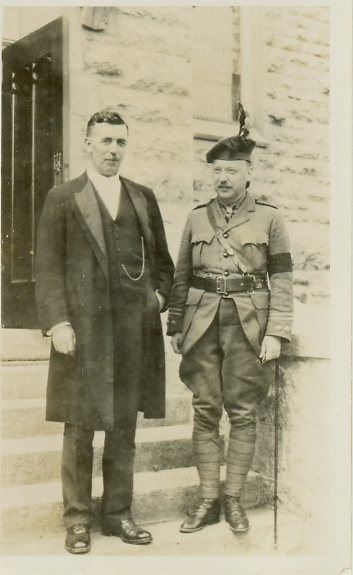

-1-MasterItem.svg)
Stories of Westminster United Church & its People / Page
47
founding and early members, as have seen, believed with less self-consciousness
in spreading
their version of the Gospel and “making Christians” out of the sundry populations
that inhabited the territories of Canada’s Western frontier.
The MacKinnon ministry at Westminster ended in 1909 when Clarence
was invited to become the Principal of Pine Hill Theological Seminary,
a position he held for 28 years, with an interlude during WWI when he
served overseas as Chaplain with the ‘Highland Brigade,’ an amalgam
of four battalions from Nova Scotia. After the War, Clarence returned
to Pine Hill and to a number of government jobs — as chair of this
committee and head of that conciliation investigation. He also was
in demand as a speaker, taking engagements in both Canada and the
United States. In 1924, he was elected Moderator of the Presbyterian
Church in Canada, the last so elected before union in 1925.
MacKinnon was a key member of Canada’s Presbyterian Church in
its final days as an independent denomination, and generally seemed
to strike a compromise between the allegiances that divided members
of his milieu: liberalism and Evangelism, populism and intellectualism,
Canada and the Empire. He was respected for his intelligence, worldliness,
engaging sermons, and compassionate personality. In the postscript
to his book,
Reminiscences
, MacKinnon concludes, “Mine have been very happy years. Goodness
and mercy have followed me all of my days, and in deep gratitude to God for His
many favours
I wish to offer my humble, if unworthy, thanks.”
Table
of Contents

Rev. Clarence MacKinnon
Above: David Christie & Clarence McKinnon.